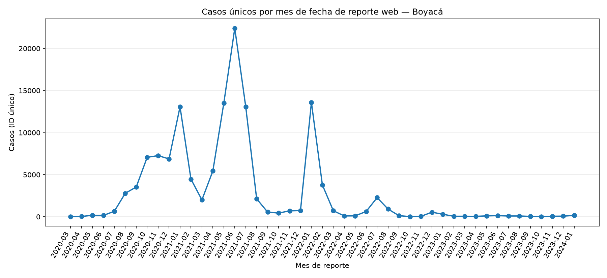
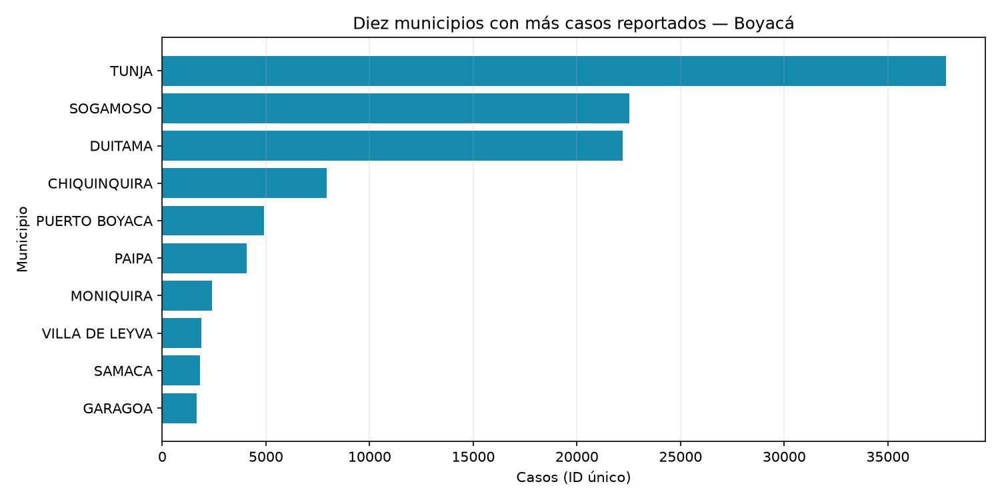

Pregunta: ¿Cómo evolucionó mes a mes el número de casos reportados?
Departamento: Boyacá (normalizado como BOYACA) ·
Periodo observado tras limpieza: 2020-03-25 a 2024-01-17.
El mes con más casos dentro del periodo fue 2021-06, con 22,400 casos únicos reportados.


Se seleccionó Nombre departamento tras quitar espacios y normalizar mayúsculas.
La fecha de agrupación es fecha reporte web, convertida a fecha con errores convertidos en valores ausentes.
Se contaron IDs únicos en cada mes calendario y por municipio; se excluyeron registros sin fecha válida, sin ID de caso o con ID repetido (se conserva la primera aparición). El tablero presenta 47 meses con registros.
Limitaciones de limpieza: 0 fechas inválidas, 0 IDs vacíos y 0 filas con ID repetido en Boyacá fueron excluidos. Municipios vacíos identificados: 0. Los meses calendario sin casos se incluyen como cero.
Perfil del archivo: 131,133 filas, 23 columnas, 0 filas exactamente duplicadas; faltantes por columna:
fecha reporte web: 0ID de caso: 0Fecha de notificación: 0Código DIVIPOLA departamento: 0Nombre departamento: 0Código DIVIPOLA municipio: 0Nombre municipio: 0Edad: 0Unidad de medida de edad: 0Sexo: 0Tipo de contagio: 0Ubicación del caso: 1,089Estado: 1,089Código ISO del país: 131,113Nombre del país: 131,113Recuperado: 1,022Fecha de inicio de síntomas: 834Fecha de muerte: 127,122Fecha de diagnóstico: 5Fecha de recuperación: 4,076Tipo de recuperación: 4,077Pertenencia étnica: 114Nombre del grupo étnico: 130,779La fecha de reporte no equivale necesariamente a la fecha de contagio o inicio de síntomas. Estos datos describen los registros contenidos en el CSV y no deben interpretarse por sí solos como incidencia real ni como cobertura completa de casos.
Portal Nacional de Datos Abiertos: Casos positivos de COVID-19 en Colombia
Indicadores: total de casos únicos válidos en el periodo y variación porcentual mensual respecto al mes anterior (no calculable si el mes previo es cero).
Alcance del archivo: este CSV contiene 131,133 filas y un único valor observado de departamento. Los resultados representan el archivo local suministrado, no necesariamente la totalidad nacional del conjunto publicado.